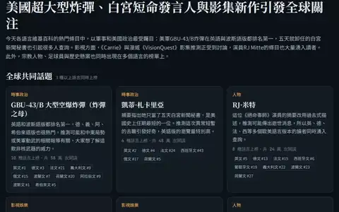
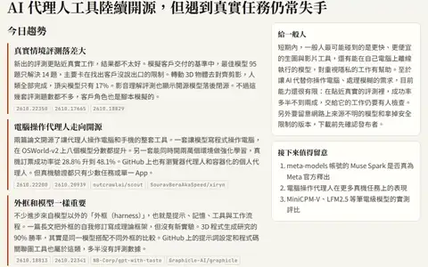
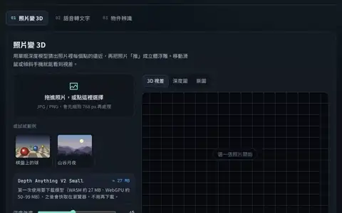

全球關注
從 21 種語言的維基百科看全球共同關注，再切到「對台灣的影響」，閱讀國際新聞與生活、產業的關聯；每則附來源。
公開快照・全球關注 10/16・台灣影響 10/18
這裡是免登入瀏覽的公開作品，依主題分類並標出目前狀態。

從 21 種語言的維基百科看全球共同關注，再切到「對台灣的影響」，閱讀國際新聞與生活、產業的關聯；每則附來源。
公開快照・全球關注 10/16・台灣影響 10/18
拖動年份到 2060，看未來台北隨 AI 預測演化；切到「每日預言」，比較三位 AI 預測者的機率、已揭曉結果與準確度排行榜。
公開快照・城市 10/19・每日預言 10/17
立體的台灣，山的光影跟此刻真實的太陽同步；拖動時間看日出與山影，找最早迎來曙光的山。
公開版
選一個地方，聽此刻的雨、風、海浪與蟲鳥鳴；天氣化成和弦、地震化成低鐘，全部由瀏覽器即時合成。建議戴耳機。
公開版

每天整理 Hugging Face 熱門論文與模型、GitHub 新爆紅的 AI 開源專案，由 Claude 寫成中文解說：重點、為什麼重要、限制在哪，還有當天的趨勢總覽。
公開版・內容到 10/18

AI 直接在你的瀏覽器裡跑：照片變立體 3D、語音轉中文字、照片物件辨識。照片和聲音都不會上傳。建議用電腦開。
運作中・第一次要下載模型

五位居民的持續運行小世界。
公開預覽

AI 應用趨勢與台股觀察文章。
可瀏覽